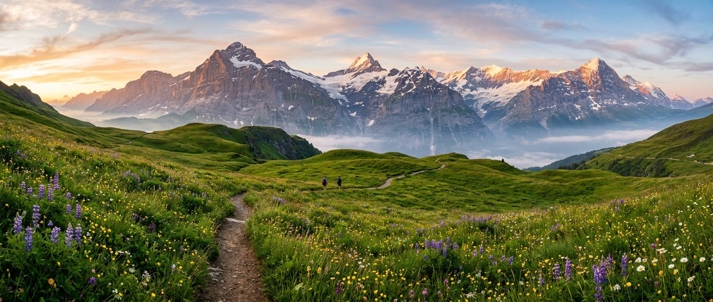

Call your next trail. Then go walk it.
Real signed trails near you, Google photos and ratings, live weather and a community that keeps the paths clean — all in one place.
Where to first?
Tap a card below, or use the bar at the bottom of your screen anytime — it’s on every page. Tap ▾ on the bar to hide it, and the Menu button in the corner brings it back.
Start here
New to hiking or riding? Pick hiker or biker and get a simple, safe first route.
Open Start →Explore trails
Signed routes near you with Google photos, ratings, weather and an assistant to ask.
Open Trails →Community
Trail condition reports, cleanup days and Pack-It-Out pledges — trails for good.
Open Community →Made for your device
What CalledIt does
Everything below works on your phone and scales beautifully on a laptop.
Real signed trails
Route data from TrailSplits and OpenStreetMap — official waymarked hiking and cycling routes, not guesses drawn on a map.
Google photos & ratings
See what a trail area actually looks like and how other visitors rated it — straight from Google Maps.
Weather on the trail
A 5-day forecast for the exact trailhead, so you never get caught in a storm you could have seen coming.
Start safe
Hiker and biker quick-starts, the SAC difficulty scale in plain language, and a pre-trip checklist.
Ask the assistant
On the Trails page, ask things like “easiest trail under 8 km” or “will it rain Saturday?” and get an instant answer.
Trails for good
Report conditions, join cleanup days and take the Pack-It-Out pledge with the community.